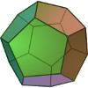
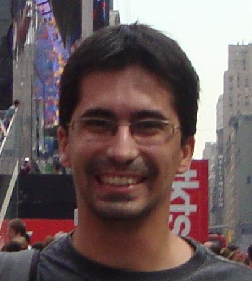
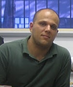
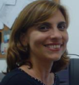
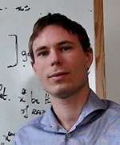
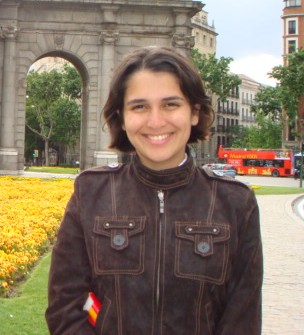
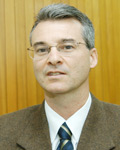
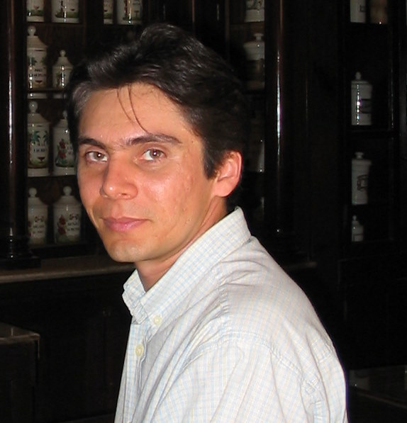

ACADEMIC NETWORK
Resources & links.
A curated collection of optimization software, professional societies, and academic colleagues from the original website.
Research resources
Optimization software, benchmark libraries and professional societies.
Mathematical Programming Society↗DIMACS Challenges↗OR-Library↗LINDO↗GAMS↗AMPL↗Ilog Cplex↗Fico Xpress↗Society for Industrial and
Applied Mathematics (SIAM)↗Institute for Operations
Research and the Management Sciences (INFORMS)↗Sociedade Brasileira de
Pesquisa Operacional↗
Academic colleagues
Professors and researchers in my academic network.

Michael Trick's Operations Research PageAcademic profile ↗Alain HertzAcademic profile ↗
Daniel de OliveiraAcademic profile ↗
Luidi SimonettiAcademic profile ↗
Lucia M. A. DrummontAcademic profile ↗Luiz Satoru OchiAcademic profile ↗
Thibaut VidalAcademic profile ↗Victor CamposAcademic profile ↗
Ana Shirley SilvaAcademic profile ↗
Cid C. de SouzaAcademic profile ↗Rosa FigueiredoAcademic profile ↗Thiago F. NoronhaAcademic profile ↗Celso C. RibeiroAcademic profile ↗Edna A. HoshinoAcademic profile ↗
Manoel CampeloAcademic profile ↗Some external links are historical and may have changed since they were first added.